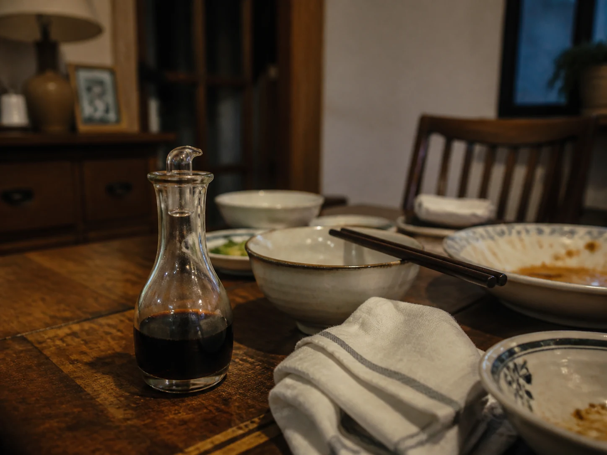

The Rice-Vinegar Bottle Beside the Dining Table
My grandmother kept a small rice-vinegar bottle within reach of the dining table, separate from the larger bottle she used at the stove.

The smaller bottle by the table
The large bottle of rice vinegar stayed near the stove. The smaller one had a narrow pour spout and a cap that clicked against the tabletop. My grandmother kept it close to the dining table, where it could be reached without leaving a bowl to go cold.
When hiccups interrupted a meal, she brought the bottle forward and poured a little into its cap. The sharp smell arrived before the cap crossed the table. Her instruction was short: do not wait, do not think about the sourness. The family record preserves that gesture without turning it into health guidance.
A sour interruption at dinner
My grandmother believed the surprise of vinegar and the act of swallowing interrupted the hiccups. That was her explanation, spoken in the kitchen language available to her. It should not be rewritten as a verified account of the diaphragm or nervous system.
Other small vessels in the archive held equally specific household meanings. The Salt-Water Glass Beside the Toothbrush stood apart from drinking cups, while Star Anise in the Winter Cup belonged to one aunt's familiar evening habit. The object's separate place often mattered as much as what a family believed it did.
Where the household record stops
The NHS includes tasting vinegar among familiar responses people try for hiccups, but also says there is no evidence that such methods work for everyone. It advises seeking professional assessment when hiccups last longer than 48 hours or recur often enough to affect daily life. This article records a family custom; it does not recommend swallowing vinegar or delaying care.
At the table, the cap was rinsed and the bottle returned to its place beside the folded cloth near the quiet wall. Bowls moved again, conversation resumed, and the remembered belief stayed with the smaller bottle. Whether the hiccups stopped is not the ending the archive needs to prove.